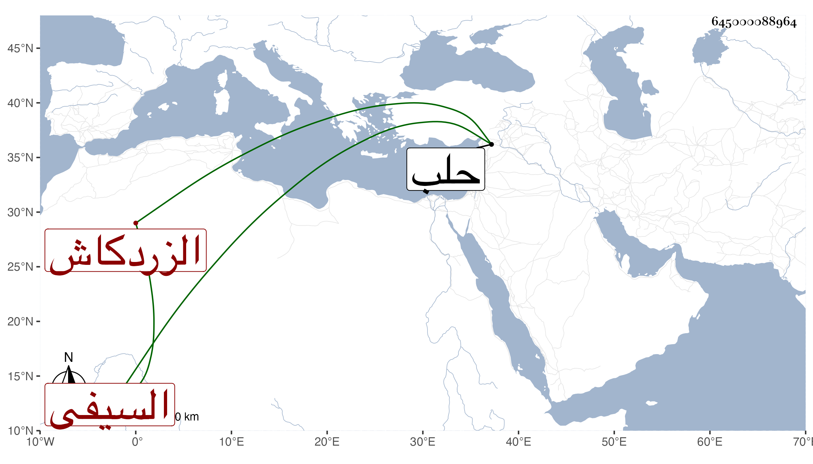

0902Sakhawi.DawLamic.ITO20230111-ara1.EIS1600.645000088964
Biography ID: 645000088964
258
جانم السيفي تمرباي الزردكاش . عمل خازندار سيده ودواداره واستقر به السلطان في الزردكاشية أول أمره بعد أن كان رأس نوبة عصاه وأحد العشرات ، وكان ممن سافر لسوار وحصل له من الدوادار جفاء ويذكر بثروة لكثرة ما معه من الاقاطيع والرزق المشتروات وغيرها مع عدم خير ولكنه قد ابتنى بجوار منزله بالقرب من زقاق حلب سبيلا ومكتبا للأيتام . مات بعد أن كان عين لا مرة الأول في شعبان سنة أربع وثمانين واستقر بعده في الزردكاشية يشبك الجمالي ناظر الخاص .
